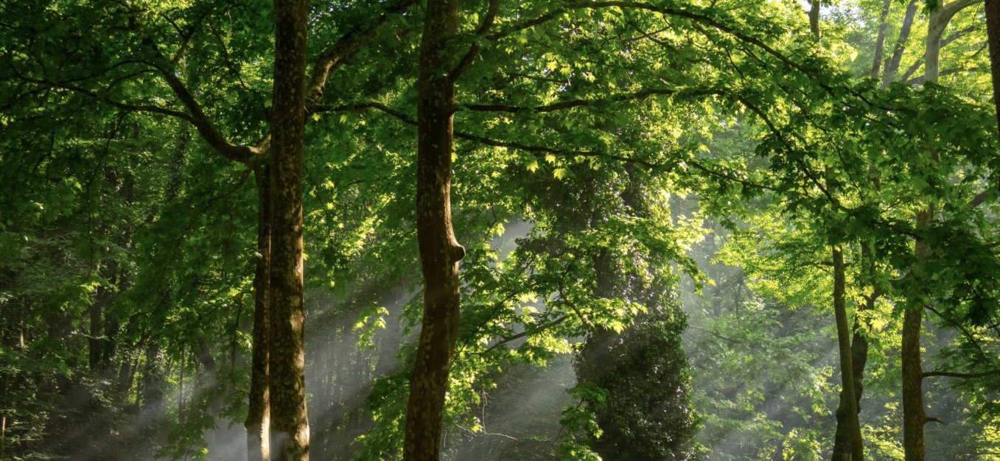

Idea i Misja
Sprawdź, dla kogo powstał nasz przewodnik, jakie ma cele oraz na jakich oficjalnych źródłach opieramy wszystkie zestawienia.
O projekcie →Najwyższa forma ochrony ojczystej przyrody
Polskie parki narodowe obejmują łącznie ponad 317 tysięcy hektarów, co stanowi około 1% terytorium całego kraju.
Wyszukaj lub przefiltruj strefę i wybierz park, aby zobaczyć jego opis, aktualną pogodę i położenie na mapie.

Przesuń w bok, aby zobaczyć kolejne godziny
Kliknij znacznik lub obszar parku, aby przybliżyć jego położenie. W prawym górnym rogu mapy przełączysz podkład na topograficzny lub ukryjesz granice.
Łączna liczba parków na przestrzeni lat.
Sprawdź, dla kogo powstał nasz przewodnik, jakie ma cele oraz na jakich oficjalnych źródłach opieramy wszystkie zestawienia.
O projekcie →Poznaj genezę parków narodowych, różnice między ochroną ścisłą a czynną, cztery strefy krajobrazowe oraz zasady świadomego zwiedzania.
Analiza zagadnień →Skontaktuj się z autorami serwisu, zgłoś poprawkę lub zapoznaj się z informacjami akademickimi o realizacji projektu.
Przejdź do kontaktu →